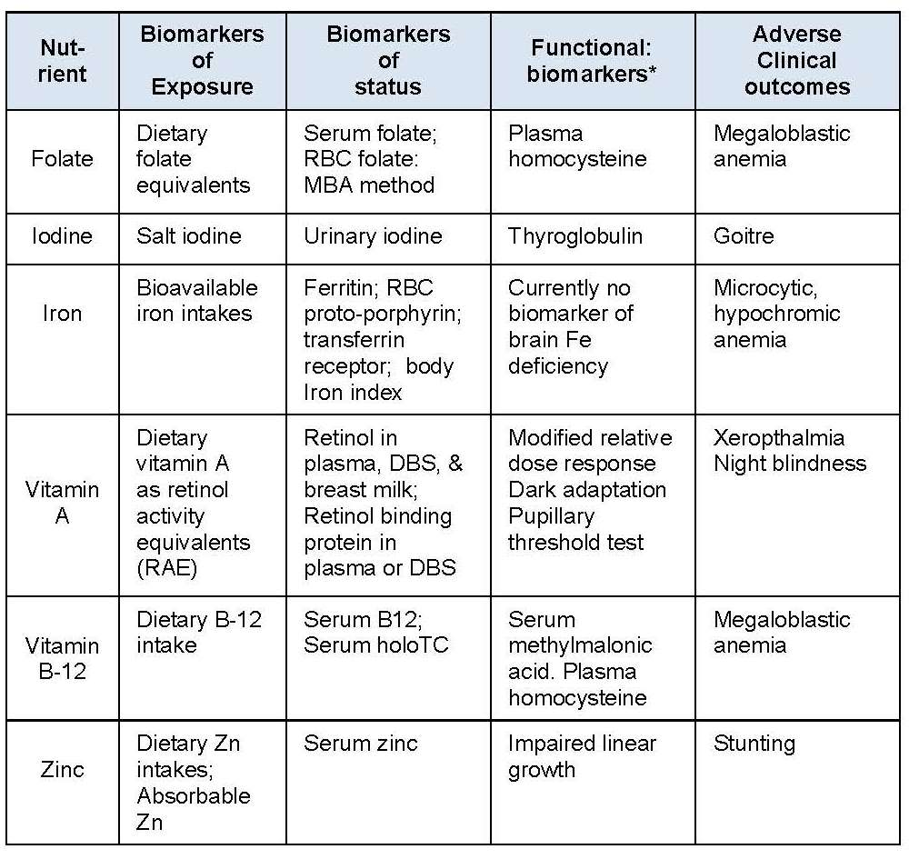

Table 15.7 The recommended biomarkers for six micronutrients of public health
importance. RBC: red blood cell; DBS: dried blood spot; holoTC:
holo-trans-cobalamin; MBA method: microbiological method. The information
in this table is drawn from six “Biomarkers of Nutrition for Development Reviews”
(Folate, Iodine,Iron, Vitamin A, Vitamin B-12, Zinc).